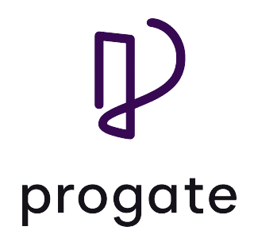
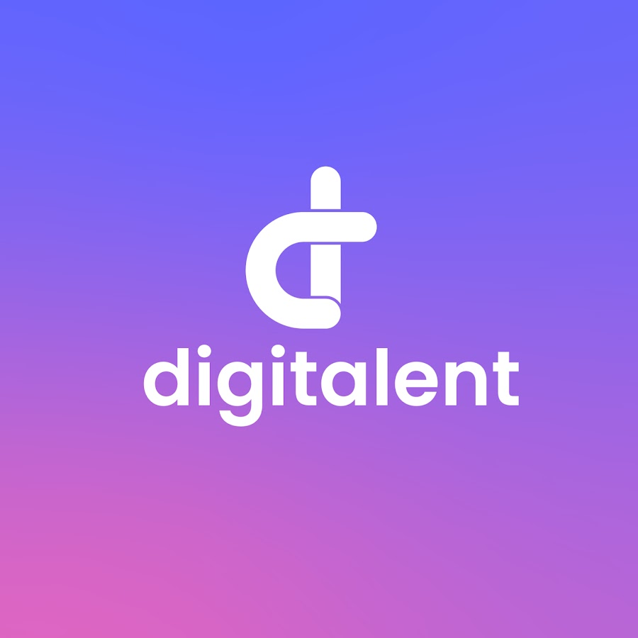

Progate
platform pembelajaran coding daring yang jadi mitra Kementerian Pendidikan, Kebudayaan, Riset, dan Teknologi (Kemendikbud Ristek) Republik Indonesia lewat program Kampus Merdeka.

Digitalent
Program Digital Talent Scholarship bertujuan untuk meningkatkan keterampilan dan daya saing, produktivitas, profesionalisme SDM bidang teknologi informasi dan komunikasi bagi angkatan kerja muda Indonesia, masyarakat umum, dan aparatur sipil negara